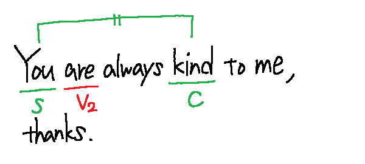

be動詞自体は意味がなく、第2文型の動詞として、
補語で主語を説明する。
また主語と時制(現在or過去)によって形が変わる。
次に表すのがbe動詞の変化の表である。
| 人称 | 現在 | 過去 |
|---|---|---|
| 1人称 | am | was |
| 2人称 | are | were |
| 3人称 | is | was |
また主語が複数形の場合は2人称の形を取る。
具体的に例文を見ていこう。
I am a member of the tennis club.
We are professional football players in Japan.
I was in Osaka ten years ago.
You are always kind to me, thanks.
You were high school students, weren't you?
She is in a hurry.
He was the first man to climb the mountain.
They are in the garden now.
このようにbe動詞は様々な形で前と後ろを連結する。
このタイプの動詞をlinking verb(連結動詞)と呼ぶ。